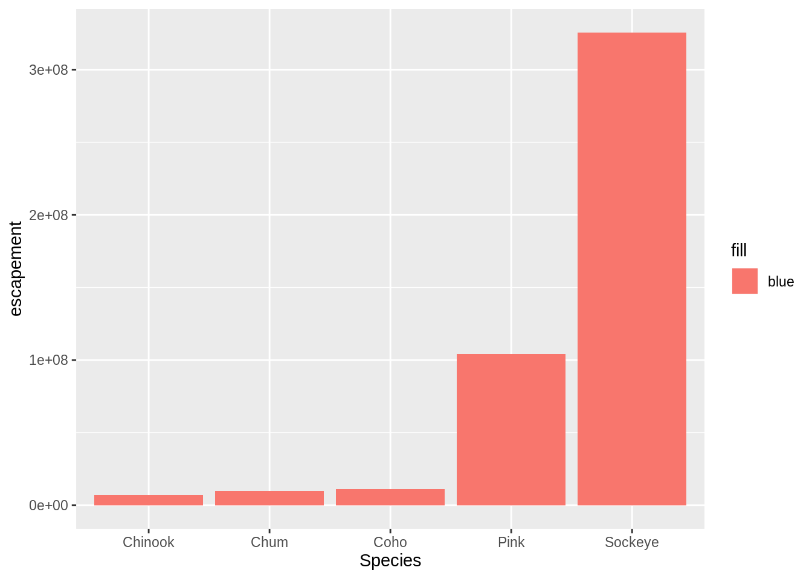
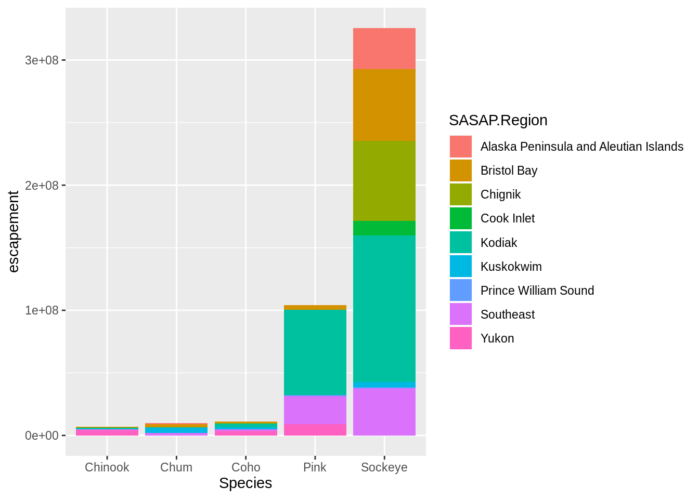
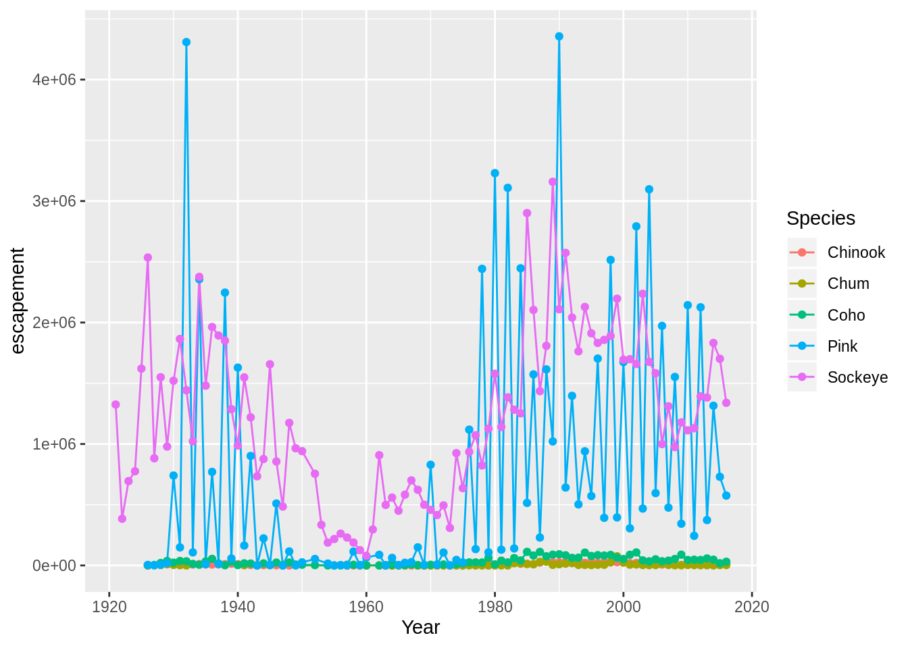
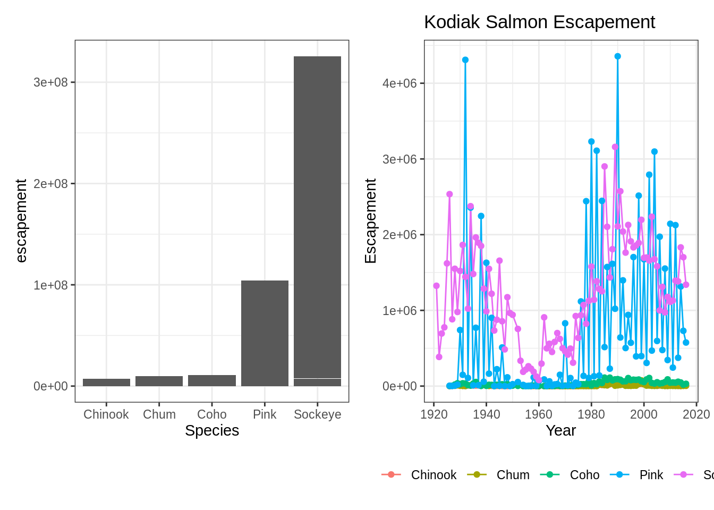

12 Publication Graphics
12.1 Learning Objectives
In this lesson, you will learn:
- The basics of the
ggplot2package to create static plots - How to use
ggplot2’s theming abilities to create publication-grade graphics - The basics of the
leafletpackage to create interactive maps
12.2 Overview
ggplot2 is a popular package for visualizing data in R. From the home page:
ggplot2 is a system for declaratively creating graphics, based on The Grammar of Graphics. You provide the data, tell ggplot2 how to map variables to aesthetics, what graphical primitives to use, and it takes care of the details. It’s been around for years and has pretty good documentation and tons of example code around the web (like on StackOverflow). This lesson will introduce you to the basic components of working with ggplot2.
12.2.1 ggplot vs base vs lattice vs XYZ…
R provides many ways to get your data into a plot. Three common ones are,
- “base graphics” (
plot(),hist(), etc`) - lattice
- ggplot2
All of them work!
I use base graphics for simple, quick and dirty plots. I use ggplot2 for most everything else. ggplot2 excels at making complicated plots easy and easy plots simple enough.
12.3 Setup
First, let’s load the packages we’ll need:
library(leaflet)
library(dplyr)
library(tidyr)
library(ggplot2)
library(DT)
library(scales) # install.packages("scales")
library(patchwork) # install.packages("patchwork")12.3.1 Load salmon escapement data
You can load the data table directly from the KNB Data Repository, if it isn’t already present on your local computer. This technique only downloads the file if you need it.
data_url <- "https://knb.ecoinformatics.org/knb/d1/mn/v2/object/urn%3Auuid%3Af119a05b-bbe7-4aea-93c6-85434dcb1c5e"
esc <- tryCatch(
read.csv("data/escapement.csv", stringsAsFactors = FALSE),
error=function(cond) {
message(paste("Escapement file does not seem to exist, so get it from the KNB."))
esc <- read.csv(url(data_url, method = "libcurl"), stringsAsFactors = FALSE)
return(esc)
}
)
head(esc)Now that we have the data loaded, let’s calculate annual escapement by species and region:
annual_esc <- esc %>%
separate(sampleDate, c("Year", "Month", "Day"), sep = "-") %>%
mutate(Year = as.numeric(Year)) %>%
group_by(Species, SASAP.Region, Year) %>%
summarize(escapement = sum(DailyCount)) %>%
filter(Species %in% c("Chinook", "Sockeye", "Chum", "Coho", "Pink"))
head(annual_esc)## # A tibble: 6 x 4
## # Groups: Species, SASAP.Region [1]
## Species SASAP.Region Year escapement
## <chr> <chr> <dbl> <int>
## 1 Chinook Alaska Peninsula and Aleutian Islands 1974 1092
## 2 Chinook Alaska Peninsula and Aleutian Islands 1975 1917
## 3 Chinook Alaska Peninsula and Aleutian Islands 1976 3045
## 4 Chinook Alaska Peninsula and Aleutian Islands 1977 4844
## 5 Chinook Alaska Peninsula and Aleutian Islands 1978 3901
## 6 Chinook Alaska Peninsula and Aleutian Islands 1979 10463That command used a lot of the dplyr commands that we’ve used, and some that are new. The separate function is used to divide the sampleDate column up into Year, Month, and Day columns, and then we use group_by to indicate that we want to calculate our results for the unique combinations of species, region, and year. We next use summarize to calculate an escapement value for each of these groups. Finally, we use a filter and the %in% operator to select only the salmon species.
12.4 Static figures using ggplot2
Every graphic you make in ggplot2 will have at least one aesthetic and at least one geom (layer). The aesthetic maps your data to your geometry (layer). Your geometry specifies the type of plot we’re making (point, bar, etc.).
Now, let’s plot our results using ggplot. ggplot uses a mapping aesthetic (set using aes()) and a geometry to create your plot. Additional geometries/aesthetics and theme elements can be added to a ggplot object using +.

What if we want our bars to be blue instad of gray? You might think we could run this:

Why did that happen?
Notice that we tried to set the fill color of the plot inside the mapping aesthetic call. What we have done, behind the scenes, is create a column filled with the word “blue” in our dataframe, and then mapped it to the fill aesthetic, which then chose the default fill color of red.
What we really wanted to do was just change the color of the bars. If we want do do that, we can call the color option in the geom_bar function, outside of the mapping aesthetics function call.

What if we did want to map the color of the bars to a variable, such as region.
ggplot is really powerful because we can easily get this plot to visualize more aspects of our data.

Just like in dplyr and tidyr, we can also pipe a data.frame directly into the first argument of the ggplot function using the %>% operator.
Let’s look at an example using a different geometry. Here, we use the pipe operator to pass in a filtered version of annual_esc, and make a line plot with points at each observation.
annual_esc %>%
filter(SASAP.Region == "Kodiak") %>%
ggplot(aes(x = Year, y = escapement, color = Species)) +
geom_line() +
geom_point()
This can certainly be convenient, especially for cases like the above, but use it carefully! Combining too many data-tidying or subsetting operations with your ggplot call can make your code more difficult to debug and understand.
12.4.1 Setting ggplot themes
Now let’s work on making this plot look a bit nicer. Add a title using ggtitle(), adjust labels using ylab(), and include a built in theme using theme_bw(). There are a wide variety of built in themes in ggplot that help quickly set the look of the plot. Use the RStudio autocomplete theme_ <TAB> to view a list of theme functions.
For clarity in the next section, I’ll save the filtered version of the annual escapement data.frame to it’s own object.
ggplot(kodiak_esc, aes(x = Year, y = escapement, color = Species)) +
geom_line() +
geom_point() +
ylab("Escapement") +
ggtitle("Kodiak Salmon Escapement") +
theme_bw()
You can see that the theme_bw() function changed a lot of the aspects of our plot! The background is white, the grid is a different color, etc. The built in theme functions change the default settings for many elements that can also be changed invididually using thetheme() function. The theme() function is a way to further fine-tune the look of your plot. This function takes MANY arguments (just have a look at ?theme). Luckily there are many great ggplot resources online so we don’t have to remember all of these, just google “ggplot cheatsheet” and find one you like.
Let’s look at an example of a theme call, where we change the position of our plot above from the right side to the bottom, and remove the title from the legend.
ggplot(kodiak_esc, aes(x = Year, y = escapement, color = Species)) +
geom_line() +
geom_point() +
ylab("Escapement") +
ggtitle("Kodiak Salmon Escapement") +
theme_bw() +
theme(legend.position = "bottom", legend.title = element_blank())
Note that the theme() call needs to come after any built in themes like theme_bw() are used. Otherwise, theme_bw() will likely override any theme elements that you changed using theme().
You can also save the result of a series of theme() function calls to an object to use on multiple plots. This prevents needing to copy paste the same lines over and over again!
ggplot(kodiak_esc, aes(x = Year, y = escapement, color = Species)) +
geom_line() +
geom_point() +
ylab("Escapement") +
ggtitle("Kodiak Salmon Escapement") +
my_theme
12.4.2 Smarter tick labels using scales
Fixing tick labels in ggplot can be really hard! The y-axis labels in the plot above don’t look great. We could manually fix them, but it would likely be tedious and error prone.
The scales package provides some nice helper functions to easily rescale and relabel your plots. Here, we use scale_y_continuous from ggplot2, with the argument labels, which is assigned to the function name comma, from the scales package. This will format all of the labels on the y-axis of our plot with comma-formatted numbers.
ggplot(kodiak_esc, aes(x = Year, y = escapement, color = Species)) +
geom_line() +
geom_point() +
scale_y_continuous(labels = comma) +
ylab("Escapement") +
ggtitle("Kodiak Salmon Escapement") +
my_theme
12.4.3 Creating multiple plots
What if we wanted to generate a plot for every region? A fast way to do this uses the function facet_wrap(). This function takes a mapping to a variable using the syntax ~variable_name. The ~ (tilde) is a model operator which tells facet_wrap to model each unique value within variable_name to a facet in the plot.
The default behaviour of facet wrap is to put all facets on the same x and y scale. You can use the scales argument to specify whether to allow different scales between facet plots. Here, we free the y scale. You can also specify the number of columns using the n_col argument.
ggplot(annual_esc, aes(x = Year, y = escapement, color = Species)) +
geom_line() +
geom_point() +
scale_y_continuous(labels = comma) +
facet_wrap(~SASAP.Region, scales = "free_y", ncol = 2) +
ylab("Escapement") +
my_theme
12.4.4 Several plots, one figure
Sometimes you want to combine separate ggplots into the same Figure. The patchwork package helps you to do this in a very easy manner:
# Plot 1
p1 <- ggplot(annual_esc, aes(x = Species, y = escapement)) +
geom_col() +
my_theme
# Plo2
p2 <- ggplot(kodiak_esc, aes(x = Year, y = escapement, color = Species)) +
geom_line() +
geom_point() +
ylab("Escapement") +
ggtitle("Kodiak Salmon Escapement") +
my_theme
# Put the plots to gether in one figure
p1 + p2
12.5 Interactive visualization using leaflet and DT
12.5.1 Tables
Now that we know how to make great static visualizations, lets introduce two other packages that allow us to display our data in interactive ways. These packages really shine when used with GitHub pages, so at the end of this lesson we will publish our figures to the website created earlier in the week during this lesson.
First let’s show an interactive table of unique sampling locations using DT.
Write a data.frame containing unique sampling locations with no missing values using two new functions from dplyr and tidyr: distinct() and drop_na().
And display it as an interactive table using datatable() from the DT package.
12.5.2 Maps
Similar to ggplot2, you can make a basic leaflet map using just a couple lines of code. Note that unlike ggplot2, the leaflet package uses pipe operators (%>%) and not the additive operator (+).
The addTiles() function without arguments will add base tiles to your map from OpenStreetMap. addMarkers() will add a marker at each location specified by the latitude and longitude arguments. Note that the ~ symbol is used here to model the coordinates to the map (similar to facet_wrap in ggplot).
leaflet(locations) %>%
addTiles() %>%
addMarkers(lng = ~Longitude, lat = ~Latitude, popup = ~ Location)You can also use leaflet to import Web Map Service (WMS) tiles. Here is an example that utilizes the General Bathymetric Map of the Oceans (GEBCO) WMS tiles. In this example, we also demonstrate how to create a more simple circle marker, the look of which is explicitly set using a series of style-related arguments..
leaflet(locations) %>%
addWMSTiles("https://www.gebco.net/data_and_products/gebco_web_services/web_map_service/mapserv?",
layers = 'GEBCO_LATEST',
attribution = "Imagery reproduced from the GEBCO_2014 Grid, version 20150318, www.gebco.net") %>%
addCircleMarkers(lng = ~Longitude,
lat = ~Latitude,
popup = ~ Location,
radius = 5,
# set fill properties
fillColor = "salmon",
fillOpacity = 1,
# set stroke properties
stroke = T,
weight = 0.5,
color = "white",
opacity = 1)Leaflet has a ton of functionality that can enable you to create some beautiful, functional maps with relative ease. Here is an example of some we created as part of the SASAP project, created using the same tools we showed you here. This map hopefully gives you an idea of how powerful the combination of RMarkdown and GitHub pages can be.
12.6 Resources
- Lisa Charlotte Rost. (2018) Why not to use two axes, and what to use instead: The case against dual axis charts
- ggplot: https://ggplot2.tidyverse.org/index.html
- patchwork: https://patchwork.data-imaginist.com/articles/guides/layout.html
- rleaflet: https://rstudio.github.io/leaflet/